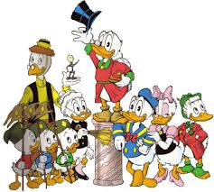

About Donald Duck
Donald Fauntleroy Duck is a cartoon character created in 1934 at Walt Disney Animation Studios. Donald is an anthropomorphic white duck with a yellow-orange bill, legs, and feet. He typically wears a sailor shirt and cap with a bow tie.
Donald Duck and his friends
Donald's Characteristics:
- He is a Duck
- He has 3 nephews
- His girlfriend is Daisy
Donald's nephews:
Huey, Dewey, and Louie are the sons of Donald's sister Della Duck; in Donald's Nephews, their mother is instead named Dumbella.
- Huey
- Dewey
- Louie
Click here for more information: Huey,Dewey and Louie